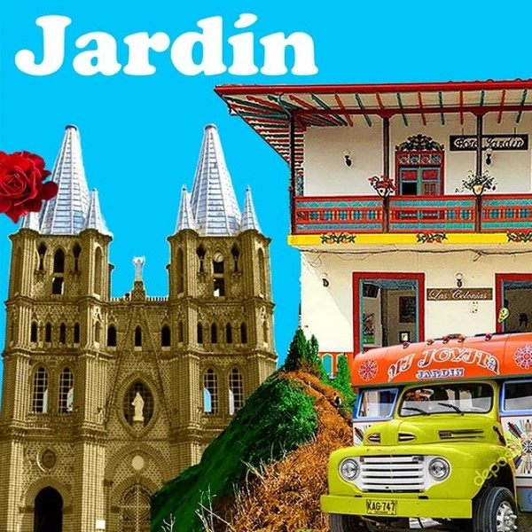

Fiestas y ferias
¡Vení parchate!

Feria del Café
Del 25 al 28 de diciembre
Son las más importantes festividades folclóricas y culturales, los días de las fiestas son la época propicia para el retorno de los fredonitas dispersos en toda la geografía nacional.
- Ubicación: Las fiestas del Café se realizan en el parque principal. Logrando así que el comercio central se vincule a dicha celebración.
- programación general
Gastronomia
Platos típicos antioqueños
El Sancocho Paisa
Conocido como una de las tradicionales sopas antioqueñas, es muy apetecido por la abundancia de alimentos y sabor. El sancocho suele prepararse en un olla grande, en la cual se hierven en agua todos los ingredientes como varios tipos de carne, mazorca, zanahoria, plátano, papas y yuca.
La Mazamorra Antioqueña
Es el postre mas famoso en las casas de los Antioqueños. Esta trae maiz amarillo, agua, leche y un acompañante como panela o bocadillo.
La bandeja paisa
Es el plato más famoso de la gastronomía antíoqueña, la característica principal es la abundancia y la variedad de los alimentos que la conforman, servidos en una bandeja blanca, ovalada sencilla, ligeramente cóncava
La arepa antioqueña
Es un plato apetecido debido a que es un gran acompañante para diferentes tipos de comidas. Esta hecha a base de maíz y se pueden encontrar diferentes tipos y sabores como lo pueden ser, la arepa blanca, la arepa amarilla y la arepa de chocolo
Dónde ir
Lugares para visitar
Guatapé
Es un municipio turístico de los Andes al noroeste de Colombia y al este de Medellín. Es famoso por sus casas decoradas con bajorrelieves de colores. Está situado cerca del embalse artificial de Peñol-Guatapé, un centro de deportes acuáticos muy concurrido. La Piedra del Peñol es una roca de granito gigante que se encuentra al sudoeste de la localidad y que dispone de una larga escalera hasta su cima, en la que se puede disfrutar de una vista panorámica de la zona.
Jardín
Es una localidad ubicada en la zona andina del noroeste colombiano, es conocida por sus casas coloridas y brillantes, sus flores coloridas como las rosas y los dulces de leche, la basilica de la inmaculada concepcion y las reconocidas chivas rumberas muy apetecidas por los turistas. Jardin es un pueblo antioqueño muy natural agradable con el ambiente y tambien muy reconocida por su diversidad en flora y fauna, como: guayacanes, rosales atardeceres y sus amables habitantes.
Santa fe de Antioquia
Es uno de los pocos pueblos de Antioquia declarados Monumento Nacional y Pueblo Patrimonio de Colombia, un destino lleno de cultura e historia, donde podrás apreciar arquitectura de la época colonial reflejada en algunas construcciones que datan de los siglos XVI a XVIII.
Medellín
En la ciudad Medellin la cual es la capital de Antioquia, podras encontrar multiples sitios para ir de tour, brindando un transporte seguro y rapido como lo es el Metro y sus lineas de acceso, como parques, comunas, museos,plazas y calles que son patrimonio Nacional.
Contacto
Contactanos
Ubicación:
Medellín Antioquia
Email:
TuriAntioquia@gmail.com
Telefono:
325238043